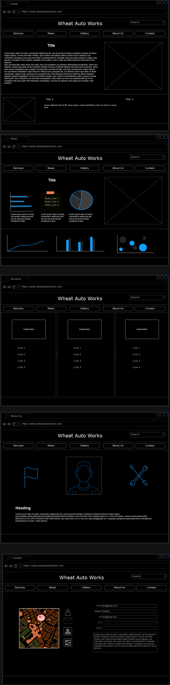
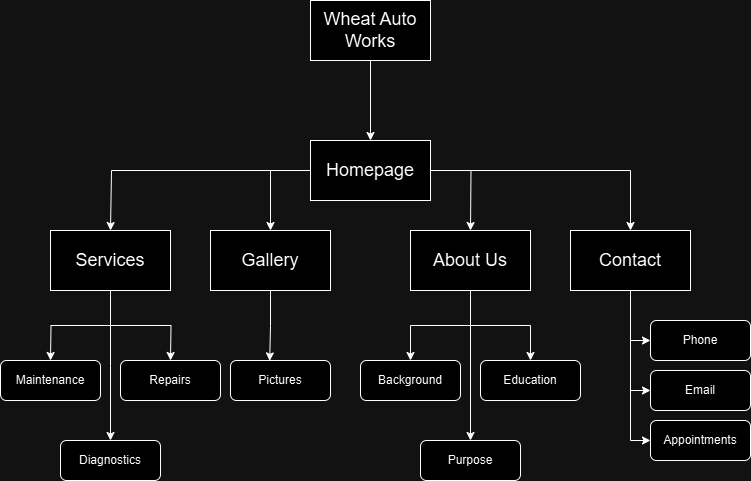

Project Overview: Wheat Auto Works - Automotive Services
Website Description and Purpose: This website will be to display Thomas's Mechanic
Services.
Intended Users: The intended users of this website will be those interested in
mechanical services for their automobile, motorcycle and off-road equipment.
Overview of Content:
Home Page: Brief description of services and experience, links to social media
and contact details
Services: In depth overview of services from basic maintenance, to repairs and
advanced diagnostics.
Gallery: Pictures of experiences and equipment
About Us: Background and education that will help the customer feel confident
in his abilities
Contact: Contact information, hours, location availablity, possible rates for
services.
Client Information:
Name: Thomas Dekutoski
Organization: Wheat Auto Works
Email: [Private]
Phone Number: [Private]
Wireframe:

Wire Frame for Wheat Auto Works
Site Map:

Site Map for Wheat Auto Works
Page Design
Home
Purpose: Introduction page that the user will find.
Audience: Anyone looking at the site for information on the company or services.
Content: The initial content will be a welcoming memo, pictures of the shop and news/deals
Actions: No actions other than NAV bar
Special Notes:
Services
Purpose: In depth outline of services offered and provided.
Audience: Users looking for automotive services.
Content: 3 tiers of service related options. Service, Maintenance and Diagnostics
Actions: Users will be able to click what they want, which will redirect them to the contact page.
Special Notes:
News
Purpose: Broadcast news within the company, the automotive space, show deals or discounts.
Audience: Users interested in news or blogs in the mechanic space
Content: News articles from newest and most relevant to oldest. Links to articles and blog posts.
Actions: Buttons to click on links that will redirect them to the specific article
Special Notes:
About Us
Purpose: Background and educational experiences.
Audience: Users that want to know who will be working on their vehicle
Content: Biography of Thomas as well as whoever he wants help from. Education from college and the Marine Corps
Actions: Links to employee socials and/or LinkedIn professional spaces.
Special Notes: Space used for employee descriptions and the equipment available.
Contact
Purpose: Provide users with contact info of the company as well as hours, availability, email, phone number and location
Audience: Users that want to get in contact with WAW or Thomas directly.
Content: Name, Company Location, Email, Phone Number, Hours, Availability
Actions: Mail form, Address link.
Special Notes:
Dynamic Functionality
Contact Form:
Provides the user with a streamline and simple form to contact the company.
Responsive Design:
Website will adjust to different applications and screen sizes for optimal user experience.
Interactive Service Descriptions
Users can hover over the services offered to get a brief description or image.